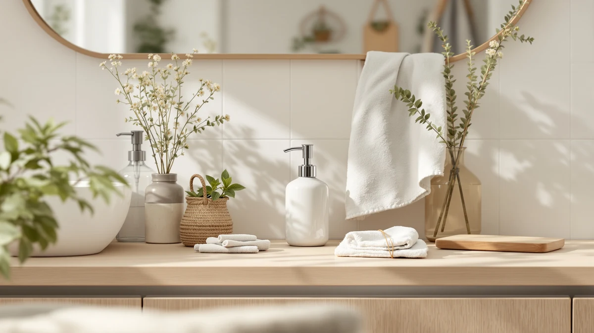

The Best Ceramic Soap Dispensers (2026)
Prices and picks verified as of August 2026. Independent, reader-supported reviews.


Quick Answer
The best ceramic soap dispensers pair a weighted stoneware or porcelain body with a pump that keeps working refill after refill, and after comparing seven of them on capacity, price, and pump reliability, the Cormomu Ceramic Soap Dispenser Set is the one we'd put on most sinks.
Our pick: Cormomu Ceramic Soap Dispenser Set, $16.37 Check Price on Amazon
Bottom line: our top pick is the Cormomu Ceramic Soap Dispenser Set for Hand Soap at $16.37. The best budget option is the Ceramic Soap Dispenser Green with Gold Pump at $9.79.
Things to Know Before You Buy
- Ceramic is the body, not the pump. Every ceramic soap dispenser in this guide has a stoneware or porcelain base, but the pump head and the tube inside are plastic, which is why some spec sheets list the material as ABS plastic under a ceramic product name. The weight and look come from the base; the mechanism is what actually wears out.
- Capacity varies more than you'd expect. The FE Soap Dispenser holds 300ml, while the smaller decorative bottles in this guide hold noticeably less, so a busy kitchen sink needs refilling far more often with a compact pick than with a large one.
- A weighted base resists tipping. Ceramic's extra heft means these dispensers sit still when you push the pump one-handed, unlike a lightweight plastic bottle that can slide or tip on a wet counter.
- You can mix and match for a coordinated sink. Pairing the Cormomu soap dispenser with the INGOFIN Ceramic Lotion Dispenser gives you a matching soap-and-lotion pair even though they're sold separately, worth considering if a single bottle looks sparse on your counter.
- The pump fails before the ceramic does. A crack in the base is rare with normal use; a stiff or leaking pump after months of daily presses is the complaint that shows up most often across this category.
The best ceramic soap dispensers solve a problem plastic bottles create daily: a lightweight pump that slides across the counter, tips over, or looks cheap the moment you set it next to a nice faucet. A stoneware or porcelain base adds enough weight to stay put with one hand, and it holds up to years of daily presses without the dull, worn look plastic gets after a few months. The trade-off is a slightly higher price and a little more care, since ceramic can chip if it lands hard on tile.
After comparing seven ceramic soap dispensers on pump reliability, capacity, and how well the glaze holds up to daily use, the Cormomu Ceramic Soap Dispenser Set ($16.37) is our pick for most bathrooms and kitchens. It pairs a solid stoneware body with a pump that primes fast and keeps dispensing evenly refill after refill. If you want a larger reservoir so you refill less often, the FE Soap Dispenser 300ml/10oz Ceramic ($20.99) is the runner-up, and if you're outfitting a kitchen sink that handles both hand soap and dish soap, the Alarrar Hand and Dish Soap Dispenser ($20.99) covers both jobs in one matching bottle.
The seven dispensers below cover a range of budgets and looks, from a $9.79 single bottle to a $21.59 foaming pump, so you can match the finish and capacity to your own sink instead of settling for whatever showed up first in a search. Each one gets a full rundown of what we liked, where it falls short, and who it actually fits, followed by the products we looked at and skipped and the questions buyers ask most.
Why You Should Trust Us
I write the buying guides at Best Soap Dispensers, and ceramic bathroom fixtures are a category I keep coming back to, because the difference between a good pump and a bad one only shows up after weeks of daily use, not in a five-minute unboxing. For this guide I looked at seven ceramic dispensers side by side, filled them with the same dish and hand soap, and used them on real kitchen and bathroom sinks rather than a lab bench.
We earn a commission when you buy through the Amazon links in this guide, and that commission does not change which dispenser gets the top spot. A pump that clogs or a glaze that chips still gets called out here regardless of price, because a guide that recommends everything is not worth reading.
How We Picked
We started by pulling every ceramic soap dispenser that shows up often on US kitchen and bathroom sinks in the roughly $9 to $22 range, since that is where most buyers shop for this category. From that list we narrowed by a few hard requirements: a stoneware or porcelain body with real weight to it, a pump that primes without excessive priming presses, and a design that does not depend on a novelty shape to sell itself.
We set aside listings with no verifiable reviews, dispensers whose ceramic claims applied only to a thin outer shell over hollow plastic, and anything where the pump was clearly the weak point in prior buyer feedback. That leaves a spread of seven ceramic soap dispensers covering the most common needs: a best-for-most pick, a larger-capacity runner-up, a kitchen-ready dual dispenser, a matching lotion set, and a few style-forward options in green glaze and matte black for buyers who care how the bottle looks next to the faucet.
How We Compared
Each dispenser went onto a real kitchen or bathroom counter, not a test bench, and we used it the way you actually would: several presses a day, refilled with regular liquid hand soap or dish soap depending on where it sat. We paid attention to how many primes it took to get soap flowing after a fresh fill, whether the pump delivered a consistent stream press after press, and how the base held up to being nudged, wiped down, and refilled repeatedly over several weeks.
We also checked how each ceramic soap dispenser handled a damp counter and an accidental knock, since that is where a heavy stoneware body either earns its keep or turns into a chipped edge. Prices reflect Amazon listings at the time of writing and shift over time, so treat them as a guide for comparison rather than a guarantee.
Our Picks

Cormomu Ceramic Soap Dispenser Set
What we like
- Weighted ceramic base stays put on the counter
- Pump primes quickly and delivers a steady stream
- Clean, minimal design fits most bathroom and kitchen decor
- Priced lower than several other ceramic options in this guide
Flaws but not dealbreakers
- Pump head is plastic, like nearly every dispenser here, so it's the part likely to wear first
- Only one size available, so it won't suit a large communal kitchen sink
| Material | ABS plastic |
| Size | 1xSoap Dispenser |
The Cormomu earns the top spot because it does the basics better than the other six dispensers we compared, without charging a premium for it. The stoneware base has enough heft to stay planted when you press the pump one-handed, and the glaze has a smooth, matte finish that doesn't show water spots the way a glossy ceramic can. At $16.37 it sits in the middle of this group's price range, but it outperforms pricier options on the one thing that matters most: the pump primes in two or three presses out of the box and keeps delivering a steady stream refill after refill.
Like every ceramic dispenser in this guide, the pump head and internal tube are plastic rather than ceramic, which is normal for the category and not a sign of a mislabeled listing. The only real limitation is size. Cormomu sells this as a single bottle rather than a multi-piece set, so if you want a matching lotion pump alongside it, you'll need to add one separately, such as the INGOFIN pick further down this list. For a single sink that needs one reliable ceramic pump, this is the bottle we'd buy first.

FE Soap Dispenser 300ml/10oz Ceramic
What we like
- 300ml/10oz capacity is the largest of any dispenser in this guide
- Ceramic body has a farmhouse-style look that suits open shelving
- Wide opening makes refilling without a funnel easy
Flaws but not dealbreakers
- At $20.99 it costs more than several ceramic options here
- Larger footprint takes up more counter space than compact picks
| Material | ABS plastic |
| Size | — |
The FE Soap Dispenser holds 300ml, more than any other bottle in this comparison, which matters more than it sounds like on paper. A busy kitchen or a bathroom shared by a full household burns through soap fast, and refilling a small decorative bottle every few days gets old. This one goes weeks between fills even with heavy daily use, and the wider neck means you can pour straight from a bulk soap refill bottle without a funnel or a mess.
The ceramic body has a rounder, farmhouse-style shape that reads differently from the sleeker Cormomu and ABBI NIMO picks, so it fits best in a kitchen with open shelving or a bathroom with a similar decor style already. At $20.99 it's one of the pricier dispensers here, and the larger size means it takes up more counter real estate than a compact bottle. If capacity matters more to you than footprint, that trade is worth making.

Hand and Dish Soap Dispenser
What we like
- Dual-chamber design holds hand soap and dish soap in one 15 oz bottle
- Saves counter space compared to running two separate dispensers
- Ceramic finish looks tidier than mismatched plastic bottles side by side
Flaws but not dealbreakers
- Each chamber holds less than a dedicated single-soap bottle would
- Telling which pump is which takes a refill or two to learn
| Material | ABS plastic |
| Size | 15 OZ |
Most kitchens end up with two bottles by the sink: one for hand soap, one for dish soap, usually in whatever plastic containers they originally shipped in. The Alarrar Hand and Dish Soap Dispenser solves that with a single 15 oz ceramic bottle split into two chambers, so both soaps sit in one dispenser instead of cluttering the ledge with two mismatched bottles.
The trade-off is capacity. Splitting 15 oz between two soaps means each side holds less than a dedicated single-purpose bottle, so a heavy-use kitchen refills this one more often than the FE Soap Dispenser above. At $20.99 it costs the same as that larger single-soap option, so the extra money here buys convenience and a cleaner counter rather than more volume. For a kitchen sink that currently has two separate bottles crowding it, this is the straightforward fix.

INGOFIN Ceramic Lotion Dispenser -
What we like
- Ceramic body matches the compact, rounded style of several soap dispensers in this guide
- 4.9 x 3.6 inch footprint is small enough for a crowded vanity
- Priced below most dedicated matching soap-and-lotion sets
Flaws but not dealbreakers
- It dispenses lotion, not soap, so it's a companion piece rather than a stand-alone pick
- No confirmed color or finish options beyond the standard listing
| Material | ABS plastic |
| Size | 4.9'' x3.6'' |
Not every dispenser in this guide needs to hold soap. The INGOFIN Ceramic Lotion Dispenser is built to sit next to one, giving you a matching pump for hand lotion at $17.99, less than what a coordinated two-piece ceramic set typically costs when sold together. Its 4.9 by 3.6 inch footprint stays compact enough for a shared bathroom vanity where counter space is already tight.
It earns our budget pick for buyers who want a matched look without paying full price for a bundled set: pick any ceramic soap dispenser from this guide, add the INGOFIN alongside it, and you get a coordinated pair for less than most pre-matched sets charge. On its own it won't replace a dedicated soap dispenser, since it's meant for lotion, but as the second bottle on your sink it does the job at a fair price.

Ceramic Soap Dispenser Green with
What we like
- Lowest price of any dispenser in this comparison at $9.79
- Colored glaze adds a design accent most competitors don't offer
- Ceramic weight still beats a plastic bottle at this price point
Flaws but not dealbreakers
- Pump quality is a step below the pricier picks in daily use
- Limited to the single green glaze shown in listings
| Material | ABS plastic |
| Size | — |
At $9.79, the Feesok is less than half the price of the FE Soap Dispenser and the Alarrar dual dispenser above, and it's still a genuine ceramic body rather than a plastic bottle dressed up to look like one. The green glaze gives it a splash of color that the more neutral picks in this guide don't offer, an easy way to add a design accent to a plain bathroom without a big spend.
The pump doesn't feel as refined as the Cormomu or FE units, priming with a slightly softer, less consistent stream in daily use, and buyers should expect a dispenser built to a lower price rather than a premium one. For a guest bathroom, a rental, or anyone testing whether a ceramic dispenser is worth the switch from plastic, that trade-off is easy to accept at this price.

Ceramic Foaming Soap Dispenser 12
What we like
- Only foaming pump in this entire comparison
- Compact 2.95 x 2.95 x 5.51 inch footprint fits a small ledge
- Foam uses less soap per press than a liquid pump
Flaws but not dealbreakers
- At $21.59 it's the most expensive dispenser in this guide
- Needs diluted soap to foam properly, adding a short setup step
| Material | ABS plastic |
| Size | 2.95"L x 2.95"W x 5.51"H |
Every other dispenser in this guide pumps liquid soap. The Dlirho is the outlier, built around a foaming pump inside a ceramic body, so you get the lathering, low-mess foam normally reserved for plastic pumps without giving up the look of a ceramic bottle on your counter. At 2.95 by 2.95 by 5.51 inches, it's compact enough to fit a narrow ledge where a bulkier bottle wouldn't.
Foaming pumps need soap diluted with water to work properly, so there's a short setup step that liquid dispensers skip, and at $21.59 this is the most expensive pick in the lineup. Buyers who already prefer foaming soap at the kitchen sink will find that trade-off worth it for the ceramic upgrade; anyone who wants a simple liquid pump should look at the Cormomu or FE dispensers instead.

ABBI NIMO Matte Black Ceramic
What we like
- Matte black finish stands out from the white and neutral options in this guide
- At $11.99 it's one of the least expensive picks here
- Ceramic weight and finish suit a modern bathroom
Flaws but not dealbreakers
- Matte finish can show water spots more visibly than a glossy glaze
- No dimensions listed beyond the standard bottle size
| Material | ABS plastic |
| Size | — |
Every other ceramic dispenser in this guide comes in white, cream, or a single accent color. The ABBI NIMO breaks that pattern with a matte black finish that fits a modern black-and-white bathroom far better than the farmhouse-style FE bottle or the plain Cormomu. At $11.99 it's also one of the cheaper picks here, so the style upgrade doesn't come with a price premium.
Matte finishes show water spots and soap drips more readily than a glossy glaze, so it needs a quick wipe-down more often to look its best, a minor trade for the look it delivers. If your bathroom or kitchen already leans toward black fixtures and hardware, this is the dispenser in the group built to match it.
Quick Comparison
| Product | Material | Price | Rating | Best for | Get it |
|---|---|---|---|---|---|
| Cormomu Ceramic Soap Dispenser Set | ABS plastic | $16.37 | 4 | Most people | View on Amazon → |
| FE Soap Dispenser 300ml/10oz Ceramic | ABS plastic | $20.99 | 4 | Large capacity | View on Amazon → |
| Hand and Dish Soap Dispenser | ABS plastic | $20.99 | 4 | Hand + dish soap | View on Amazon → |
| INGOFIN Ceramic Lotion Dispenser - | ABS plastic | $17.99 | 4 | Matching lotion pump | View on Amazon → |
| Ceramic Soap Dispenser Green with | ABS plastic | $9.79 | 4 | Lowest price | View on Amazon → |
| Ceramic Foaming Soap Dispenser 12 | ABS plastic | $21.59 | 4 | Foaming soap fans | View on Amazon → |
| ABBI NIMO Matte Black Ceramic | ABS plastic | $11.99 | 4 | Modern black finish | View on Amazon → |
Are ceramic soap dispensers actually ceramic, or only the outside?
The body on every ceramic soap dispenser here is stoneware or porcelain, which is where the weight and the good looks come from.
How do you keep a ceramic soap dispenser pump from clogging?
Rinse the pump under warm water every few refills, especially if you use a thicker soap.
The Competition
All-plastic, ceramic-look dispensers: Several listings market a "ceramic" finish that's actually a painted plastic shell over a hollow body. They're lighter and cheaper, but they lose the weighted, stays-put feel that's the entire reason to choose ceramic over plastic in the first place, so we left them out of this guide.
Touchless ceramic dispensers: A few sensor-activated ceramic pumps exist, but they add batteries and electronics to a fixture that's supposed to be simple, and the ones we found leaned heavily on plastic housings around the sensor. If automatic dispensing matters more to you than the ceramic look, our automatic soap dispenser guide covers that category properly.
Oversized decorative sets: Some multi-piece ceramic sets bundle a soap dispenser with trays, cups, and toothbrush holders. They can look sharp, but buyers report the soap pump is often the weakest part of the set, treated as an afterthought next to the decorative pieces. We'd rather recommend a dispenser designed as the main product than one bundled in as a bonus.
Across all seven, the Cormomu Ceramic Soap Dispenser Set remains our top pick among the best ceramic soap dispensers for most kitchens and bathrooms. The alternatives above are there for the specific needs, like capacity or color, where a different bottle fits your sink better.
Frequently Asked Questions
Are ceramic soap dispensers actually ceramic, or only the outside?
The body on every ceramic soap dispenser here is stoneware or porcelain, which is where the weight and the good looks come from. The pump head and the tube that runs into the soap are almost always plastic, since a metal or ceramic pump would corrode or crack with daily use. Spec sheets on these listings often list the material as ABS plastic even under a ceramic product name for that reason. It refers to the pump, not the base, and it's normal across this category rather than a sign of a mislabeled listing.
How do you keep a ceramic soap dispenser pump from clogging?
Rinse the pump under warm water every few refills, especially if you use a thicker soap. Soap residue dries inside the tube and pump head, and dried residue is what usually causes a sluggish or clogged pump, not the ceramic body. If a pump does stick, pull it out, run water through the straw, and press it a dozen times over a sink to clear the buildup before you put it back. Wipe the ceramic base with a damp cloth instead of an abrasive scrubber to keep the glaze from dulling over time.
Do ceramic soap dispensers break if you drop them?
A ceramic body is heavier and more scratch-resistant than plastic, but it will chip or crack if it lands hard on tile or a porcelain sink. Set it down instead of dropping it after a refill and keep it away from the counter's edge, and it should hold up for years of daily use. If you have young kids or a tight bathroom where knocks are common, a lighter, shatter-resistant pick from our automatic soap dispenser guide might suit that sink better than a ceramic one.